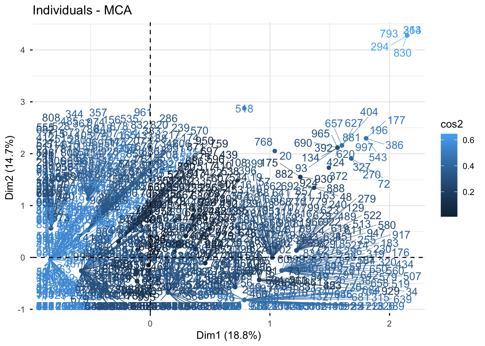
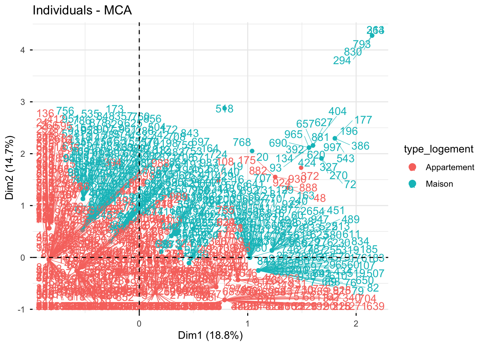
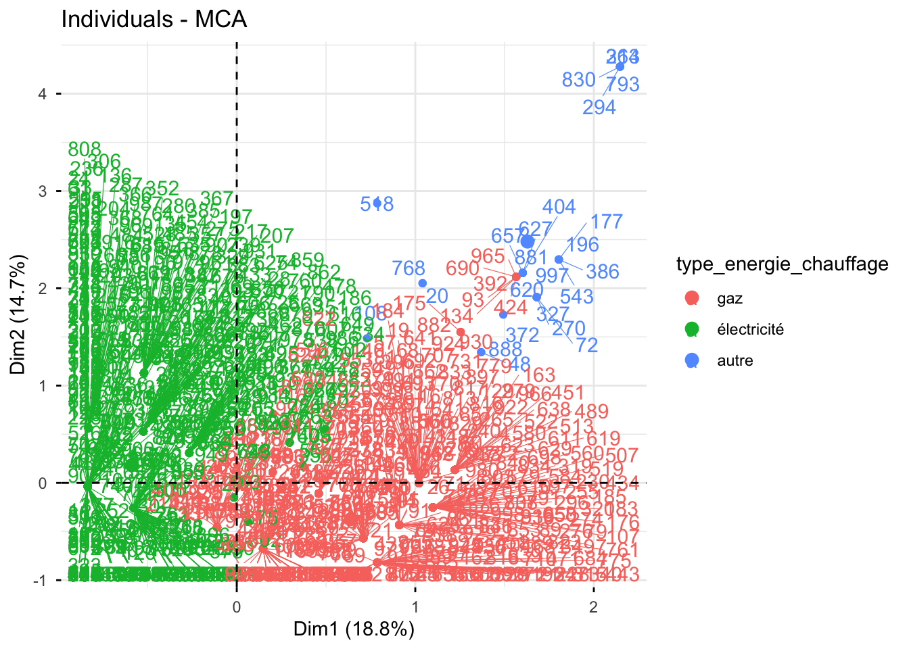
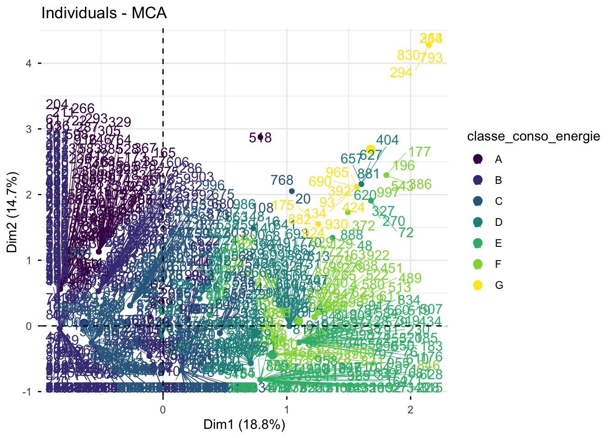

data_dpe <- read.table("data_dpe.txt", header = TRUE, sep = "")
data1 <- data_dpe[, c("type_logement", "type_energie_chauffage", "classe_conso_energie")]Partie 4 Analyse des correspondances multiples (ACM)
1 Objectif de l’ACM
On va réaliserer une Analyse des correspondances multiples (ACM) afin d’explorer les relations entre les variables qualitatives et de visualiser les associations entre elles.
data1$type_logement <- factor(
data1$type_logement,
levels = c(1, 2),
labels = c("Appartement", "Maison")
)
data1$type_energie_chauffage <- factor(
data1$type_energie_chauffage,
levels = c(1, 2, 3),
labels = c("gaz", "électricité", "autre")
)
data1$classe_conso_energie <- factor(
data1$classe_conso_energie,
levels = c("A", "B", "C", "D", "E", "F", "G"),
ordered = TRUE
)
summary(data1) type_logement type_energie_chauffage classe_conso_energie
Appartement:639 gaz :433 A: 98
Maison :361 électricité:542 B:295
autre : 25 C:274
D:121
E:127
F: 70
G: 15 2 Valeur propre
library(FactoMineR)
data1.mca <- MCA(data1, graph = FALSE)
data1.mca$eig eigenvalue percentage of variance cumulative percentage of variance
dim 1 0.5654050 18.846832 18.84683
dim 2 0.4397829 14.659430 33.50626
dim 3 0.3651877 12.172924 45.67919
dim 4 0.3333333 11.111111 56.79030
dim 5 0.3333333 11.111111 67.90141
dim 6 0.3333333 11.111111 79.01252
dim 7 0.2714109 9.047031 88.05955
dim 8 0.2470885 8.236284 96.29583
dim 9 0.1111250 3.704166 100.000003 ACM
3.1 Carte des variables de la MCA 1
library(factoextra)
fviz_mca_var(data1.mca,repel=TRUE,geom.var=c('arrow','text'))
Interprétation du graphique
L’analyse des flèches met en évidence trois profils de logements :
- Les appartements utilisant l’électricité sont associés aux meilleures performances énergétiques (classes B et C).
- Les logements chauffés au gaz se situent généralement dans les classes D et E, correspondant à une performance énergétique moyenne.
- Les maisons utilisant d’autres sources d’énergie sont fortement associées à la classe G, la moins performante sur le plan énergétique.
En conclusion, les appartements chauffés à l’électricité présentent les meilleures performances énergétiques, tandis que les logements utilisant d’autres sources d’énergie sont les plus énergivores.
3.2 Carte des variables de la MCA 2
fviz_mca_var(data1.mca,choice='var',repel=TRUE)
Interprétation de l’ACM
Les deux premières dimensions sont principalement expliquées par la classe énergétique et le type d’énergie de chauffage, tandis que le type de logement joue un rôle plus secondaire.
La proximité entre type_energie_chauffage et classe_conso_energie indique une forte relation entre ces variables : le type d’énergie utilisé est étroitement lié à la performance énergétique du logement.
L’ACM met en évidence deux grands profils : les logements performants, souvent chauffés à l’électricité, et les logements moins performants (classes F et G), davantage associés au gaz ou à d’autres sources d’énergie. Ainsi, le type d’énergie apparaît comme le principal levier d’action pour améliorer l’efficacité énergétique.
Enfin, les analyses précédentes suggèrent que les logements les plus énergivores sont généralement associés à une combinaison de bâtiments anciens et de systèmes de chauffage peu performants.
fviz_contrib(data1.mca,choice='var')
Contribution des variables à la Dim1
Le type d’énergie est le principal facteur expliquant la première dimension. L’électricité est associée aux meilleures classes énergétiques (A/B), tandis que le gaz est davantage lié aux classes moins performantes (D/E/F). Cela suggère que le choix de l’énergie de chauffage joue un rôle majeur dans la performance énergétique des logements.
Par ailleurs, les classes F contribuent fortement à la différenciation des logements, alors que la contribution de la classe G reste limitée en raison de son faible effectif dans l’échantillon.
Enfin, le type de logement (maison ou appartement) contribue peu à la dimension étudiée, ce qui indique que la performance énergétique dépend davantage du système de chauffage que du type de logement lui-même.
3.3 Individuals
fviz_mca_ind(data1.mca,col.ind = "cos2", repel = TRUE)
Analyse des individus
L’axe Dim1 oppose les logements performants (classes A, B, C), majoritairement chauffés à l’électricité, aux logements moins performants situés à droite du graphique.
Quelques individus isolés dans le quadrant supérieur droit correspondent aux passoires énergétiques (classes F et G), souvent associées à des systèmes de chauffage anciens ou à d’autres sources d’énergie.
Les couleurs représentent la qualité de représentation (cos²) : plus la couleur est claire, mieux l’individu est représenté par les deux dimensions.
Enfin, les maisons et les appartements ne forment pas de groupes distincts, ce qui confirme que la performance énergétique dépend davantage du type d’énergie de chauffage que du type de logement.
fviz_mca_ind(data1.mca,habillage="type_logement", repel = TRUE)
fviz_mca_ind(data1.mca,habillage="type_energie_chauffage",repel=TRUE)
fviz_mca_ind(data1.mca,habillage="classe_conso_energie",repel=TRUE)
NoteConsulter le code Python
Vous pouvez consulter le notebook Python dédié à la visualisation des données en cliquant sur le lien ci-dessous :